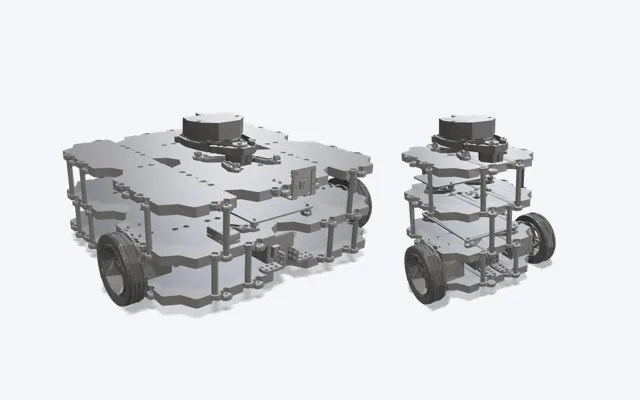
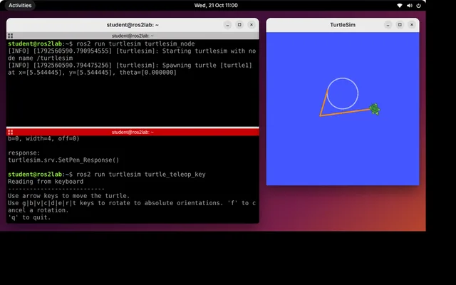
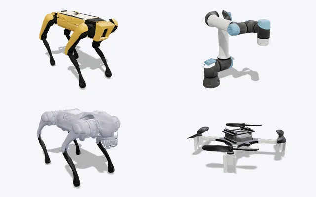
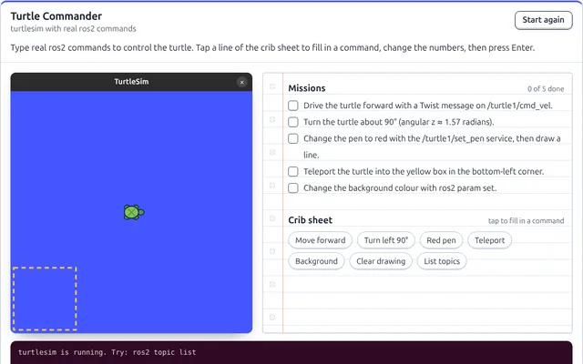
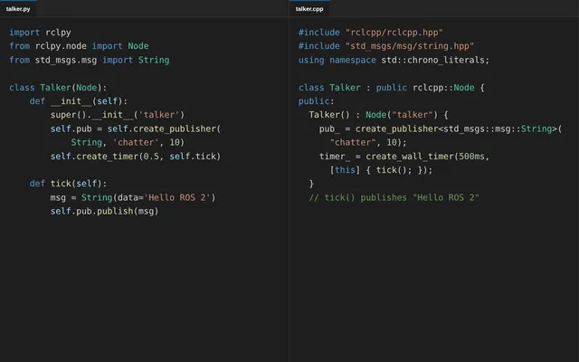
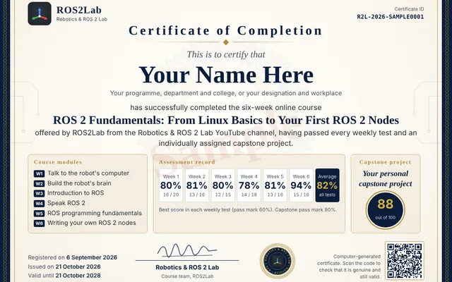
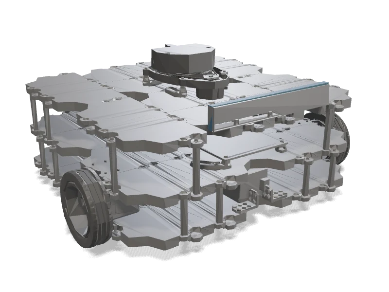
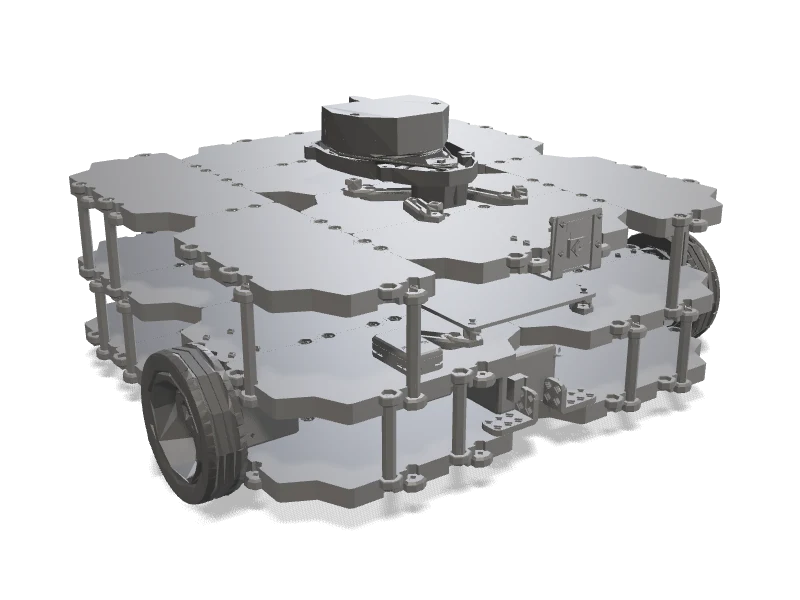

Free founding batch · register by 31 Dec 2026
Learn robotics with ROS 2, from your first command
A six-week online course for complete beginners. Type real ROS 2 Jazzy commands, move a simulated robot, and earn a certificate. Nothing to install to start.
- 1–2 hours a day
- 60 days to finish
- Certificate after Week 6

Live practice computer
Type real ROS 2 commands now
Ubuntu 24.04 · ROS 2 Jazzy · Terminator · turtlesim
- 1Tap
ros2 run turtlesim turtlesim_nodebelow to start the turtle. - 2Tap
ros2 run turtlesim turtle_teleop_keyto take control. - 3Drive with the arrow keys or the ← ↑ ↓ → buttons.
Keyboard shortcuts
As in Terminator: Shift+Ctrl+O split below, Shift+Ctrl+E split right, Alt+arrows move between terminals, right-click for the menu, Ctrl+C stops a program, Tab completes, ↑ repeats a command. Drag a window by its title bar.
Why ROS2Lab
Everything you need to start robotics
Built for students who have never written code, and useful for anyone new to ROS 2.

Free for the founding batch
Register by 31 December 2026 and study the whole course free.

A robotics lab in your browser
Terminal, turtlesim, RViz and Gazebo run on the page. Days 1–9 need only a browser, even on a phone.

Robots to explore
TurtleBot3, robot arms, Spot, Go2, humanoids and drones. TurtleBot3 is the course robot; the others are still under test.

Learn by playing
Short games with badges, and animations that show each idea before you type it.

Python and C++, side by side
From Week 5 every idea comes first in Python and then in C++. Follow either, or both.

A certificate anyone can check
Your own project, your marks, a QR code and a Verify page. Add it to LinkedIn. Valid for 2 years.
Made for
- School and college students
- UG, PG and PhD students
- Graduates
- Faculty and research scholars
- Engineers new to ROS
No coding experience needed · Keep the course for life when you finish in 60 days · Under 18? Register with a parent’s consent.
- Length
- 6 weeks · 30 days
- Lessons
- 95, ~30 min each
- Assessment
- 6 tests + 1 project
- Award
- Certificate, 2 years
- Software
- ROS 2 Jazzy
What you will be able to do
- Use the Ubuntu terminal to move around, manage files and install softwareWeek 1
- Write and run short Python programs, and read basic C++Weeks 1–2
- Explain how ROS 2 nodes communicate with topics, services, actions and parametersWeeks 3–4
- Build a ROS 2 package with your own publisher, subscriber and serviceWeek 5
- Start two robots with one launch fileWeek 6
- Use frames, message settings and managed nodes (tf2, QoS, lifecycle)Week 6
Projects you will build
- Battery monitorWeek 5 · a node that watches a value and warns you
- Driving sequencesWeek 6 · timed moves with logging
- Two robots, one launch fileWeek 6 · safe parameters and QoS
- Patrol robotWeek 6 · lifecycle, components and tests
- Your personal capstone projectA brief made only for you, in Python or C++ · 80% to pass
Courses
Start with the certificate course. The modelling module is optional.
ROS 2 from zero Certificate
Linux, Python and C++ from the beginning, then nodes, topics, services, actions and launch files.
Weeks 1–6 · 95 lessons · 6 weekly tests · 1 project

Robot modelling & RViz Optional
Describe a robot in URDF and Xacro, publish its frames with TF, and view it in RViz.
Weeks 7–9 · 22 lessons · tests that do not count · not part of the certificate
Week by week
Five days of lessons each week, then a test of about 15 questions.
| Week | Topic | You will learn | Assessment |
|---|---|---|---|
| 1 | Talk to the robot’s computer | The Ubuntu terminal, files, Python from zero | Test |
| 2 | Build the robot’s brain | Python objects, C++ basics, installing ROS 2 Jazzy | Test |
| 3 | Introduction to ROS | Why robots need ROS, ROS 1 vs ROS 2, DDS and QoS | Test |
| 4 | Speak ROS 2 | Nodes, topics, services, parameters, actions, launch | Test |
| 5 | ROS programming fundamentals | Your own packages, publishers, subscribers, services | Test |
| 6 | Writing your own ROS 2 nodes | Nodes that control a robot, in Python and C++ | Test + project |
| 7–9 | Robot modelling & RViz | URDF, Xacro, meshes, TF, RViz markers | Optional tests |
Your certificate
- Finish every lesson95 short lessons in Weeks 1–6.
- Score 60% or more in every weekly testTwo attempts each, your best score counts, and every student gets a different paper.
- Score 80% or more in your personal projectA small ROS 2 package with a brief made only for you. Up to two submissions.
- Apply for your certificateIt is signed and issued online, valid for 2 years, with a QR code anyone can scan to check it.
How to join
- Register with your emailVerify your email and add your college or workplace. Free for the founding batch.
- Start Day 1 straight awayYour 60 days begin. Days 1–9 need only a browser.
- Keep it for lifeFinish every lesson and pass every Week 1–6 test within 60 days, and your access stays open for life.


Robot simulator
Real robots, in a real simulator, in this tab
This TurtleBot3 drives itself around the course's practice world: its lidar casts 360 rays, the walls stop it and the ball rolls away when it bumps it. Take the wheel with the arrows.
A TurtleBot3 in Gazebo, in your browser (about 3 MB to download).
In the robot simulator, with Gazebo Harmonic, RViz 2 and MoveIt 2, you launch robots like these yourself with colcon build and ros2 launch.
Who teaches this
From the Robotics & ROS 2 Lab channel
This course comes from the Robotics & ROS 2 Lab YouTube channel, where ROS 2 is explained step by step with hands-on demonstrations. The course follows the same style: one idea at a time, tried out straight away.
Questions
I have never written code. Can I join?
Yes. Week 1 starts with your first terminal command, and Python is taught from zero.
Do I need Ubuntu or a powerful laptop?
Not to start. Days 1–9 need only a browser. On Day 10 you install ROS 2 Jazzy on Ubuntu 24.04 (WSL2, dual boot, a virtual machine or a lab computer). After that every lesson up to Day 30 still works in the practice terminal in your browser. Ubuntu helps most for the final project, but it is not required.
Can I learn on my phone?
Yes. Lessons, animations, games and tests work on a phone. A laptop is more comfortable for typing code in the practice terminal.
How do the weekly tests work?
Each week ends with a timed test that opens when you finish that week’s lessons: 15 questions in 35 minutes in Weeks 1–4, 16 questions in 40 minutes in Weeks 5–6. Every student gets a different paper. You get two attempts, your best score counts, and 60% passes.
- Answers: once you pass, or after your last attempt, you can see every question with your answer, the correct answer and why.
- Two attempts below 60%: ask your instructor, who can give you another attempt.
- Deadline: tests have no fixed date, but to keep the course for life, pass every Week 1–6 test within your 60 days.
How is the personal project marked?
After the last lesson you get your own small ROS 2 project, with names and numbers chosen just for you. You submit your package files and a short report, up to two times. It is marked out of 100 and 80 passes:
| Works as specified in your brief | 40 |
| Uses exactly the names, message types and values in your brief | 15 |
| Clean ROS 2 code: node class, timers and callbacks, logging | 20 |
| Launch file and YAML parameters start the whole project | 10 |
| Report: explains the design and the exact commands to run it | 15 |
What does the certificate show?
Your name, the six modules, every test mark, your project score, the issue date and 2-year validity. Its ID and QR code open the Verify page, which confirms it is genuine. You can add it to LinkedIn.
Is the course free?
Yes, for everyone who registers in the founding batch, until 31 December 2026.
How long can I use the course?
60 days from the day you register. Finish every lesson of Weeks 1–6 and score at least 60% in each test within those 60 days, and your access stays open for life. In your first registration you can ask once for up to 30 extra days.
How much time does it take?
About 1–2 hours a day (Weeks 5 and 6 are the longest), around 48 hours in total.
Before you enrol: what do parents and teachers need to know?
- Language: the lessons, tests and practice terminal are in English.
- Starting level: no coding needed; Python and the terminal are taught from zero. Days 1–9 need only a browser.
- Time: about 1–2 hours a day for 30 days of lessons, plus the tests and the project.
- Under 18: register with a parent’s or guardian’s consent (Terms of Use, Privacy notice). You can delete the account and its data at any time.
- Syllabus: the course plan lists every lesson, test and the project marking scheme, and prints as a PDF.
Who can join?
Students (UG, PG or PhD), graduates, faculty, research scholars and engineers. If you are under 18, register with a parent’s or guardian’s consent.